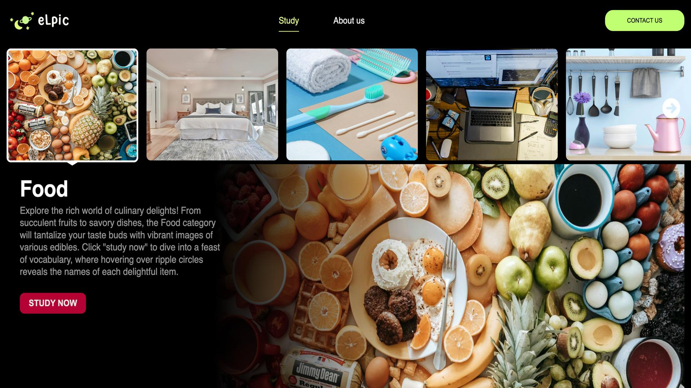
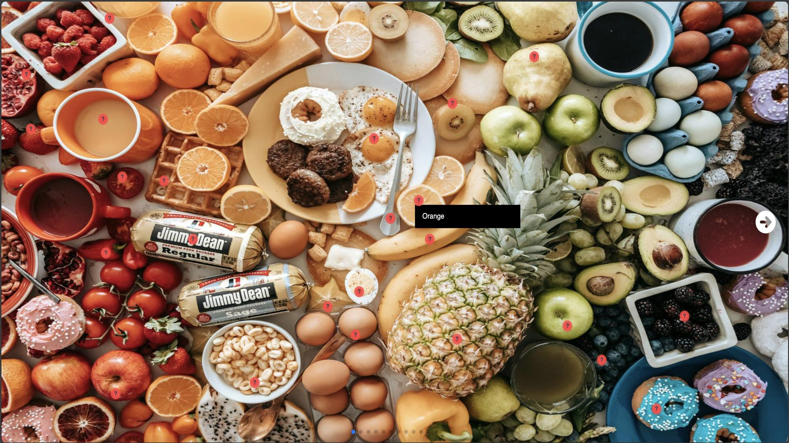
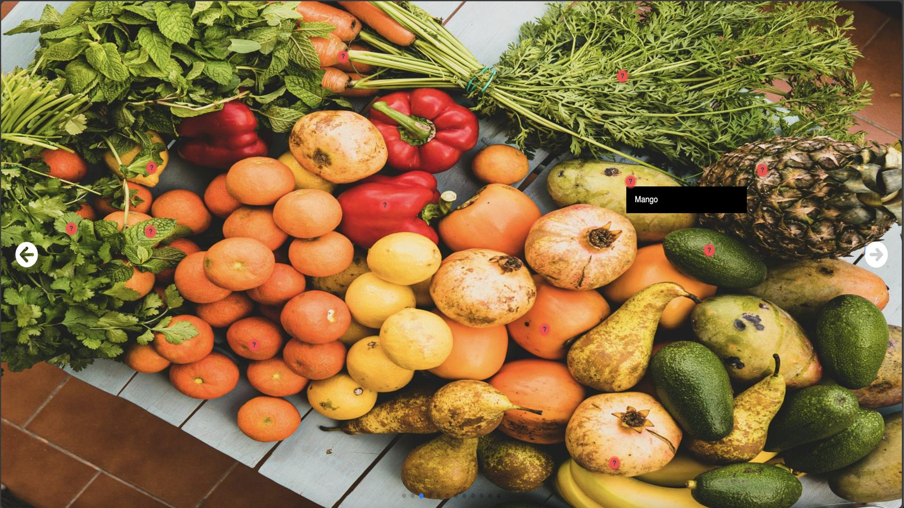
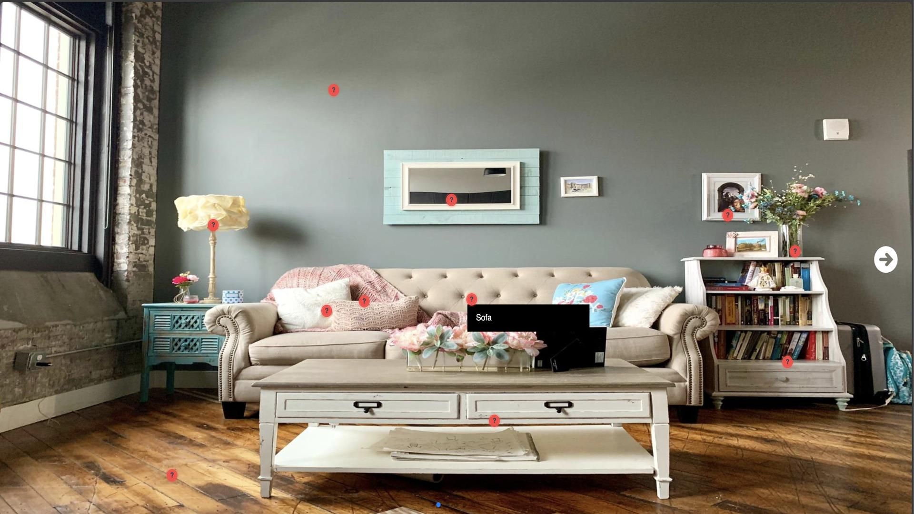
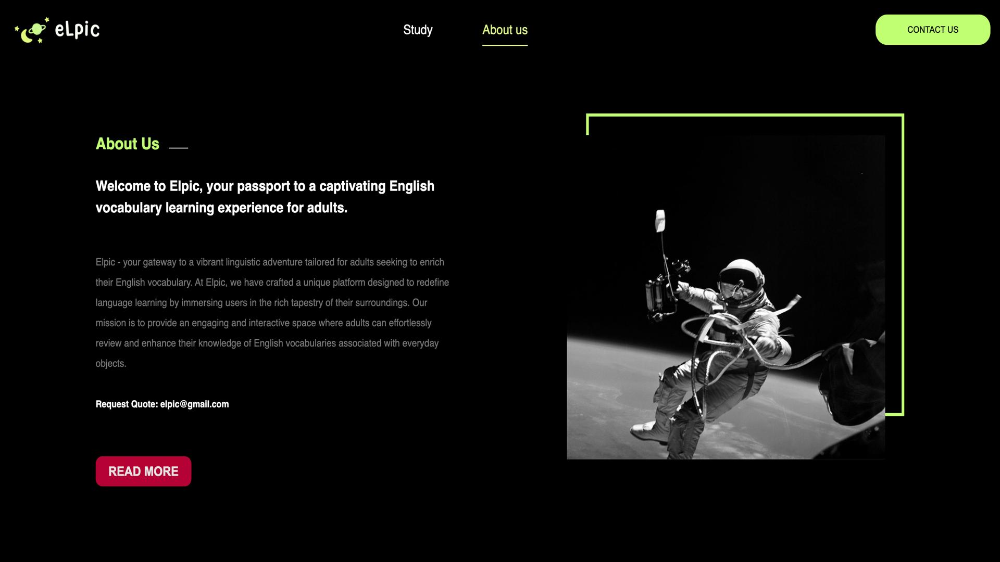
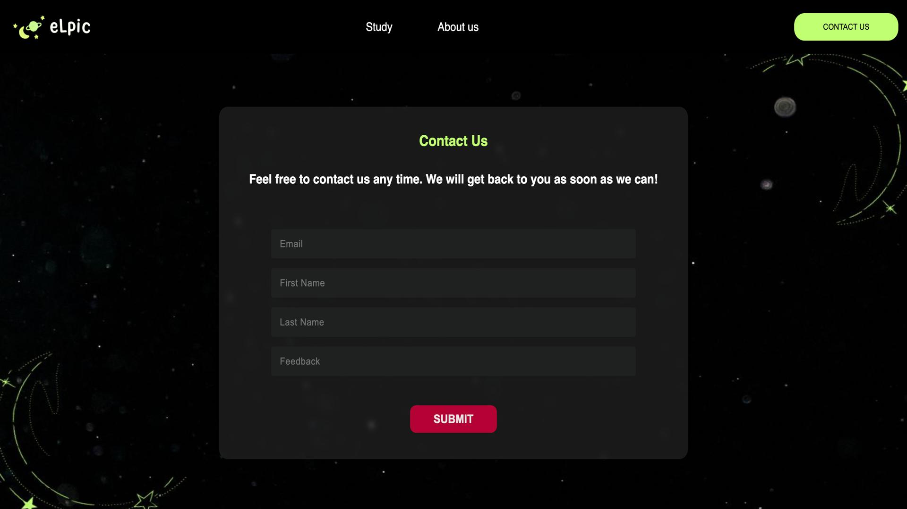

Enhance your English vocabulary with Elpic, the immersive platform for adults to review and learn English words associated with everyday objects. Explore categories like Living Room, Kitchen, Bedroom, Bathroom, Workspace, School, and Food.

Elpic creates an immersive and engaging learning environment that goes beyond conventional vocabulary-building platforms. Interactive elements and user-friendly design contribute to a truly enriching educational experience.
Explore curated word categories that mirror real-life scenarios—Living Room, Kitchen, Bedroom, Bathroom, Workspace, School, and Food. Learn vocabulary in context, making it more relevant and applicable to daily life.
Tailored specifically for adults, Elpic understands the unique needs and preferences of mature learners. The platform ensures that the learning journey is both enjoyable and tailored to adult learners' cognitive styles.

Leveraging the power of React with TypeScript, Elpic delivers a robust and responsive learning experience. The combination of these technologies facilitates seamless interactions, real-time updates, and a reliable platform.

Navigate through the platform effortlessly, thanks to an intuitive and well-structured interface. Elpic prioritizes user-friendly navigation to enhance the overall learning process.
Dive deep into specific word categories to master vocabulary relevant to different aspects of life. This category-based approach ensures a focused and systematic learning progression.

Elpic goes beyond rote memorization by encouraging the practical application of learned words in various contexts. Engage in exercises and scenarios that reinforce the usage of newly acquired vocabulary.

Elpic is designed for continuous learning, allowing users to progress at their own pace. Regular updates and new word additions keep the platform dynamic and encourage ongoing exploration.
